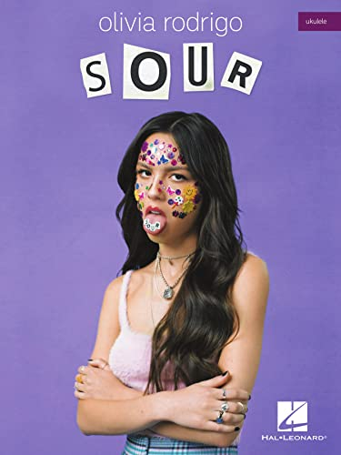

Lançamento do Próximo Livro
Livro - Olivia Rodrigo
Autor: Olivia Rodrigo
Título: Sour
Gênero do livro: Álbum Musical
Resumo do Livro
O livro "Sour" é um livro que reflete a jornada emocional de Olivia Rodrigo enquanto ela explora temas de amor, perda e auto-descoberta. O livro é uma coleção íntima e pessoal que captura a essência das músicas do álbum homônimo, oferecendo aos leitores uma visão mais profunda sobre o processo criativo e os sentimentos que inspiraram suas letras. Através de anotações e fotos, Rodrigo compartilha suas reflexões e experiências pessoais, proporcionando aos fãs uma conexão mais próxima com a artista e sua música.
Índice
- Primeiros Passos
- Primeiras Influências
- Fontes de Inspiração
- Processo Criativo
- Histórias por Trás das Canções
- Recepção Crítica
- Conexão com os Fãs
- Performances ao Vivo
- Entrevistas Importantes
Livro da Olivia Rodrigo
Preço:R$87,16
Conheça o livro da artista Billie Eilish, que explora sua vida pessoal e sua carreira através de fotos e histórias inéditas.
Compre Agora